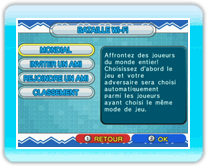

16 |
Bataille Wi-Fi (Dr. Mario) |
 |
|

Dans Dr. Mario, vous pouvez affronter des joueurs du monde entier via la Connexion Wi-Fi Nintendo. Pour accéder à ce mode, sélectionnez CWF NINTENDO dans le menu principal de Dr. Mario puis BATAILLE Wi-Fi. Un routeur sans fil compatible ou un Connecteur Wi-Fi USB Nintendo et l'accès à Internet
haute vitesse sont nécessaires pour jouer en ligne. Pour plus de détails, visitez Nintendo.com.
NOTE: vous devez avoir au moins un ami enregistré dans votre liste d’amis pour pouvoir choisir INVITER UN AMI ou REJOINDRE UN AMI. Pour enregistrer des codes ami, sélectionnez PARAMÈTRES AMI dans le menu CWF Nintendo. |
 |
 |
 |